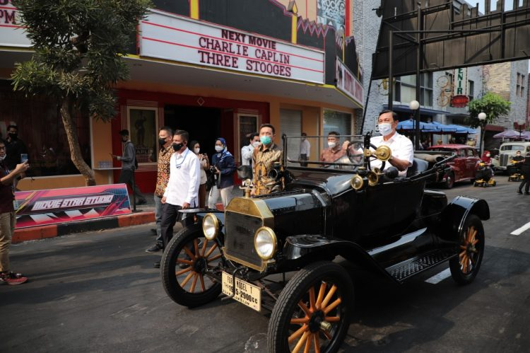

Potret Menko Luhut Keliling Museum Angkut Naik Ford Model T1915
KOTA BATU - Menteri Koordinator Bidang Kemaritiman dan Investasi,
Luhut Binsar Panjaitan baru saja melakukan kunjungan ke Kota Batu,
pada Senin (26/4). Di sana, Ia tampak antusias mencoba mengendarai
salah satu mobil tertua di dunia, yakni Ford Model T keluaran tahun 1915.
Setelah selesai dengan urusan di Balai Kota Among Tani, Ia dan rombongan
melakukan kunjungan ke salah satu destinasi wisata milik Jawa Timur Park
Group, yakni Museum Angkut.
Ternyata, mobil Ford Model T tersebut merupakan salah satu koleksi andalan
dari Museum Angkut. Mobil keluaran tahun 1915 tersebut tampak gagah dan masih
berfungsi dengan baik saat dikendarai oleh Luhut.
Didampingi oleh Endang A. Shobirin, Operational Manager Museum Angkut,
Luhut tampak mengendarai mobil tersebut dalam rangka meninjau Museum Angkut
sebagai salah satu destinasi wisata yang paling banyak diminati oleh wisatawan di Kota Batu.
Luhut bersama dengan rombongannya tiba dan mendarat di helipad Museum Angkut. Setelah itu,
dengan didampingi oleh pihak Jawa Timur Park Group, ia mulai melihat koleksi-koleksi unik di Museum Angkut.
Di zona Hall, Luhut melihat banyak koleksi Museum Angkut,
termasuk koleksi Helikopter Bell-47J Siwalet dan Mobil Chrysler Windsor Deluxe 1952 peninggalan Presiden Soekarno.
Setelah itu, barulah Luhut dan rombongan mulai mengikuti parade berkeliling area Museum Angkut, mulai dari zona Batavia, zona Gangster Town, hingga zona Hollywood.
Pada kesempatan ini, Luhut bersama dengan rombongannya memang datang dengan menggunakan dua helikopter dari bandara Abdurahman Saleh, Malang dan mendarat langsung di Stadion Brantas, Kota Batu.
Selain meninjau Museum Angkut sebagai destinasi wisata pilihan, Luhut juga menandatangani prasasti peresmian Jawa Timur Park 3. Selain itu, Ia juga membahas potensi sektor-sektor pariwisata yang masih bisa dikembangkan di seluruh area Malang Raya.
PREVIOUS NEWS